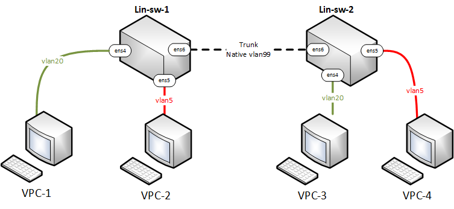

Схема:

Дано:
2 машины под управлением ubuntu 22.04 тут мы
заинтересованные в пакете iproute2
и 4 VPC, чтобы убедиться, что все работает.
| Hosts | IP | VLAN |
| lin-sw-1 | 10.0.99.10/24 | 99 |
| lin-sw-2 | 10.0.99.20/24 | 99 |
| VPC-1 | 10.0.20.10/24 | 20 |
| VPC-2 | 10.0.5.10/24 | 5 |
| VPC-3 | 10.0.20.20/24 | 20 |
| VPC-4 | 10.0.5.20/24 | 5 |